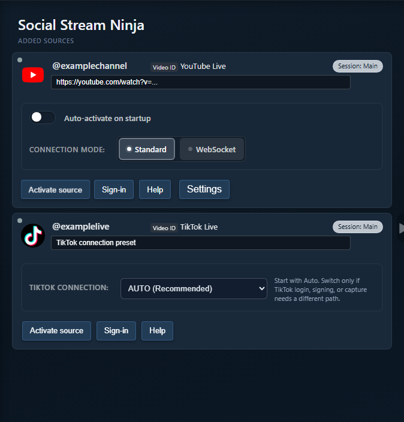

Sellel lehel
Mis on type?
type on sissetuleva Social Streami andmepaketi kanooniline allikatunnus. Ülekatted, URL-filtrid, API-d ja Event Flow eristavad selle abil platvorme ning allikavariante.
{
"type": "youtubeshorts",
"chatname": "Ava",
"chatmessage": "Hello from Shorts"
}| Nimi | Tähendus | Ärge ajage seda segamini |
|---|---|---|
type |
Sissetuleva andmepaketi allikas, näiteks youtube või instagramlive. |
Kuvatav silt, ühendusrežiim või sündmuse nimi. |
event |
Mis juhtus, nt superchat, gift, või viewer_update. |
Selle tootnud platvorm. |
sourceName |
Valikuline kanali, ruumi või allika kuvatav nimi. | Püsiv väärtus, mida kasutab From Source päästik. |
tid |
Lähtevahekaart või töölaua allikaakna ID, mida kasutatakse vastuseks ja allika välistamiseks. | Platvormi tüüp. |
Töölauarakendus target |
Salvestatud kategooria, mille järgi valitakse URL, režiim ja jäädvustusskript. | Garantii, et iga väljastatud andmepakett sisaldab sama stringi. |
Tähtis: Event Flow’ Allikast päästik võrdleb seadistatud väärtust otse väärtusega message.type. Kasutage andmepaketi täpset väiketähtedega väärtust.
Levinud ja segadust tekitavad tüübid
| Jäädvustuse või kasutajaliidese nimi | Andmepaketi tüüp | Miks see võib olla üllatav |
|---|---|---|
| YouTube'i otsevestlus | youtube |
DOM, API perioodiline pärimine ja WebSocket/voogedastus kirjeldavad edastusviisi, mitte eraldi tüüpe. |
| YouTube Shortsi otsevestlus | youtubeshorts |
Sissetulevates filtrites ja Event Flow edastussihtkohtades on see eraldi tüüp, kuid YouTube’i ühised juhtelemendid käsitlevad vajaduse korral mõlemat varianti ühe rühmana. |
| Instagram Live / InstaFeed Live | instagramlive |
Instagrami postituste ja voo kommentaarid kasutavad instagram. |
| TikFinity | tiktok |
TikFinity on ühendustööriist; normaliseeritud platvormiks jääb TikTok. |
| X | x, või pärandväärtust twitter Twitteri kaubamärgi valikuga |
Olemasolevad filtrid võivad tahtlikult säilitada vanema nime. |
| Bilibili piirkondlikud valikud | bilibili |
Töölauarakenduse sihtmärgid ja skriptid võivad kasutada nime bilibilicom või bilibilitv, samal ajal kui andmepaketid normaliseeritakse. |
| OBS-süsteemi sündmused | obs |
Need ei ole vestlusallikad, kuid võivad edastada Event Flow’sse näiteks sündmusi scene_changed. |
Kasutage Sündmuste teatmik väljade andmeleppe kohta ja Toetatud saidid avaliku platvormi seadistuste nimede jaoks.
YouTube Shorts ja Event Flow
Sissetulev vaste on täpne: kasutage youtubeshorts Shortsi sõnumite From Source päästikus ning youtube tavaliseks YouTube'i reaalajas vestluseks.
Väljuv vaste on samuti täpne: Relay Chat käsitleb neid eraldi sihtkohtadena.
- Sihtkoht
youtubesaadab ainult tavalistesse YouTube'i reaalajas vestlusakendesse. - Sihtkoht
youtubeshortssaadab ainult YouTube Shortsi otsevestluse akendesse. - Mõlemani jõudmiseks lisage kummagi sihtkoha jaoks eraldi toiming või edastage kõigile platvormidele peale lähteallika.
Muud kogu YouTube’i hõlmavad juhtelemendid võivad tahtlikult käsitleda mõlemat tüüpi ühe platvormirühmana. See ei muuda eespool kirjeldatud Event Flow täpset sobitamist.
Vanemate versioonide tõrkeotsing
Vanemad versioonid rühmitasid mõlemad edastussihtkohad, nii et kaks toimingut võisid saata igasse YouTube’i aknasse kaks sõnumit. Kui see juhtub, värskendage Social Stream Ninjat. Reflection Filter takistab edastusringe, kuid ei paranda vanemate versioonide kattuvat sihtkohtade sobitamist.

Jätkake Event Flow juhend või YouTube'i seadistusjuhend.
Instagram Live ja Instagrami kommentaarid
Kasuta instagramlive reaalajas vestluse jaoks, mis on jäädvustatud Instagram Live'i või InstaFeedi otseallika kaudu. Kasutage instagram mittereaalajas voo, postituste või staatiliste kommentaaride jaoks.
- Reaalajas vestluse voog: Allikast =
instagramlive. - Postituste/kommentaaride voog: Allikast =
instagram. - Mõlemad: kasutage kahte päästikut ühe ühise toimingu jaoks või Any Source päästikut, millele järgneb tüüpi arvestav filter.
Tüübi valimiseks ei piisa nähtavast Instagrami kaubamärgist; sisu kontekst eraldab need kaks.
Üldised, kohandatud ja nimeta allikad
sources/generic.js on üldine varuvariant DOM-ist jäädvustamiseks. See otsib levinud vestlusridu, nimesid, sõnumeid, avatare ja sisestusvälju. See alustab väärtusega generic, seejärel tuletab tavaliselt väiketähtedega tüübi tuntud platvormist või lehe hostinimest.
- Kasutage seda tõestamaks, et tavalise DOM-vestluse saab jäädvustada enne spetsiaalse allika kirjutamist.
- Ärge eeldage töökindlat sündmuste, modereerimise, kustutamiste, virtualiseeritud loendite ega suletud shadow DOM-i tuge.
- Hostinimest tuletatud tüüp on mugav, kuid pole püsiv avalik andmelepe. Enne filtrite loomist kontrollige väljastatud andmepaketti.
- Kui allikal pole väljakujunenud platvorminime, valige üks püsiv väiketähtedega
type. KasutagesourceNameinimesele suunatud ruumi või kanali sildi jaoks. - Kui stabiilset identiteeti veel pole,
genericon kindlam kui tüübi muutmine sõnumiti. Välised integratsioonid kasutavad tavaliselt teadlikult valitud väärtust, näiteksexternal.
Kui kasutajad, ülekatted või vood sõltuvad uuest tüübist, dokumenteerige see Sündmuste teatmik selle asemel, et seda vaikselt ümber nimetada.
Skriptide lisamine töölauarakenduses
Töölauarakendus salvestab allika target, valib ühe või mitu sourceFile/sourceFiles, avab allikaakna ja lisab sellesse projekti jagatud jäädvustusskriptid. Chrome’i käitusaja ühilduvussild edastab jäädvustatud sõnumeid ja vastamiskäske lehe ning rakenduse vahel.
- Sihtmärgi ja skripti failinimed ei pea ühtima andmepaketi tüübiga.
youtubeshortssihtmärk laadibsources/youtube.js, mis väljastabyoutubevõiyoutubeshortslehe kontekstist. - Ka Bilibili sihtmärgid kasutavad jagatud või piirkondlikke skripte, kuid väljastavad
bilibili. sources/inject/*.jsfailid on lehe kontekstis töötavad abiskriptid reaalajaühenduste või lehe muutujate jaoks. Kanoonilise andmepaketi eest vastutab endiselt allikat ümbritsev skript.- Mitme skripti lisamisel vältige olukorda, kus kõik abiskriptid pakuvad sama väljaminevat sihtkohta. Jäädvustatud sõnumi päritolu ja vastamise võimekus on eri asjad.
- Allikate jäädvustamise muudatused kuuluvad selle hoidla
sources/failidesse. Töölauarakendus kasutab neid; selle pakendatud varukoopia ei ole esmane allikas.

Hooldajad saavad seadistamise kulgu jälgida töölauarakenduse failis index.html allika-akna loomine, siis main.js ja preload.js skriptide lisamiseks ja ühendussillaks.
Vastamine ja allikatele edastamine
Sissetuleva sõnumi päritolu ja väljamineva sõnumi saatmise võimekus on seotud, kuid neid käsitlevad eri andmelepped.
| Tegevus | Kuidas see valib | Levinud tõrge |
|---|---|---|
| Vasta lähteallikale | Kasutab tid täpselt algse vahekaardi või akna poole pöördumiseks. |
Ei tid, või ei saa see jäädvustusrežiim vestlussõnumeid saata. |
| Edasta platvormile | Küsib avatud allikatelt, kas nad toetavad seda väljuvat sihtkohta. | Valitud variandile ei vasta ükski avatud allikaaken või ei saa allikas vestlussõnumeid saata. |
| Edasta kõigile peale lähteallika | Saadab kõigile suunamist toetavatele allikatele, jättes välja lähteallika tid. |
Allikas ei toeta automaatset sisestamist või jäädvustatakse tagasi saadetud sõnum uuesti. |
- Allikaskripti
getSourcevastus näitab väljamineva suunamise tuge. YouTube’i ühised juhtelemendid võivad mõlemat varianti rühmitada, samas kui Relay Chat lisab sihtkoha sobitamiseks täpse Shortsi URL-i konteksti. - Üldine jäädvustus võib leida tõenäolised sisestusväljad ja neile fookuse anda, kuid see ei taga, et sait lubab automaatset saatmist.
- API/WebSocketi režiimid võivad nähtavale lehele tippimise asemel saata platvormi API-de kaudu.
- Töölauarakenduses Ainult roboti vastused (ilma jäädvustamiseta) hoiab allika vastamiseks ja oleku pärimiseks saadaval, kuid takistab selle tavapäraste jäädvustatud sõnumite edastamist.
- Enne mitme platvormi vahelise edastuse loomist katsetage vastamist ühe allikaaknaga.
Kust leida täpseid üksikasju
- Sündmuste teatmik: kanoonilised väljad ja platvormi sündmuste nimed.
- Event Flow juhend: päästikud, toimingud, mallid, tagasikajastuse käsitlemine ja testid.
- Eraldiseisva rakenduse režiimid: allikaakende ja ühendusrežiimide käitumine.
- Toetatud saidid: platvormide nimed ja seadistusnõuded.
- Üldised ja kohandatud allikad: tagavara ja väline jäädvustamine.
- Töölauarakenduse allikaaknad: sihtmärgi, skripti, silla ja ainult vastamise režiimi sisemine töö.
- Allika lisamine: allikate andmelepped, skriptide lisamise abitööriistad, manifestid ja juhendid.
Silumisel uurige üht töötlemata andmepaketti ja märkige üles selle type, event, sourceName, ja tid. Nii saab tavaliselt eristada sissetulevate andmete sobitamist, väljaminevate sõnumite suunamist ja topeltjäädvustamist.